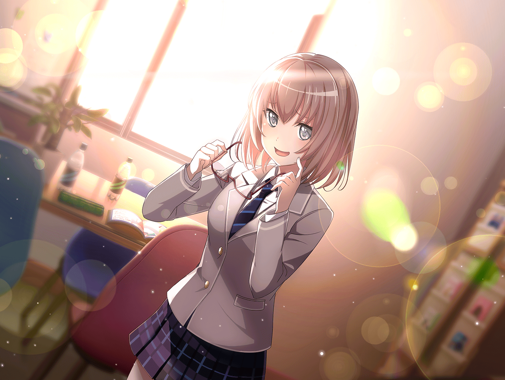

芸能事務所 会議室
スタッフ
……以上で、お披露目イベントの説明を終わります。
何か、質問はありますか？
千聖
ドラムの正式なメンバーの方は、いつ決まる予定なのでしょうか？
スタッフ
ドラムは叩いている風にみせる、というのが難しいので
実際に叩ける人を探しているんですが、
なかなか見つからなくて……
スタッフ
なんとか、今日から１週間以内には
見つけたいと思っていますが……
スタッフ
それまでの間は、うちの事務所のスタジオに勤務している
サポートドラムの方が入ってくれます。大和さーん！ いる？
麻弥
は、はいっ！
大和麻弥といいます。メンバーが見つかるまでの間ですが、
よろしくお願いしまっす
一同
よろしくお願いします！
千聖
正式なメンバーの方も早く見つかるといいですね
スタッフ
ええ、決まり次第またご連絡しますので。
……それでは今日は解散。お疲れ様でした
一同
お疲れ様でしたっ
千聖
私も別件の仕事があるので失礼するわね。
お疲れ様
麻弥
ジブンもこのあと別のリハが入ってるので
挨拶だけですみませんが、失礼しまっす！
彩
（……ずっと憧れていたアイドルになれる、
はじめてのチャンスなのに、純粋に喜べない……
３年間、この瞬間を待っていたはずなのに）
イヴ
……楽器、弾かないのに、バンドですか？ なぜ？
私、わかりません……！
日菜
まあ、お客さんに嘘をつくのは辛いかもしれないけどー
どうせつく嘘なら完璧にやりきったほうがよくない？
……って、あたしは思うんだよねー
イヴ
完璧に……？
日菜
そう、完璧！
嘘が見破られないくらい完璧にライブをやりきるってこと。
嘘も見破られなければ、真実になるんじゃないかなー、なんて
イヴ
ん～？ 難しいです……
日菜
やるからには貫き通せってこと！
そうすればなんだって真実になるんだよ。おっけー？
イヴ
貫き、通す……なるほど！ 理解しましたっ！
ブシドーは、己を貫き通すことをとても大事にしています。
お披露目ライブも、ブシドーですね！
日菜
そう、ブシドー！ あはは、ブシドー、いいね！
イヴ
はいっ！ 私、頑張りますっ！
彩
貫き通す、か……
彩
（Pastel＊Palettesは私にとって初めてであり、
３年目にやっときた、多分最後のチャンス。
だから、私は何があってもこのチャンスを逃すわけにはいかない）
彩
（……たとえそれが、本番で歌わないというものだとしても）
日菜
それにさー、バンドなのに演奏してないって超面白くない？
何事も、ドヨーンっとしてるよりも、
ワクワクしてたほうがいいと思うよ？
彩
……そうだね。前向きにならなくちゃ
日菜
そーゆーこと。やるしかないじゃん？
……ふわぁ～。そろそろあたしも帰ろうかなー？
じゃ、まったねー
イヴ
あっ、私も失礼します！ お疲れ様でしたっ！
彩
お疲れ様でした！
彩
前向きに……か

芸能事務所 廊下
日菜
ねえねえ！ 千聖ちゃん、だっけー？ これからよろしくねー♪
千聖
ええ。こちらこそよろしくね
日菜
あたし、千聖ちゃんのことテレビで見たことあるよー。
まさか、このバンドにゲーノージンがいるなんてびっくりだよね
千聖
ふふ。アイドルとしては超新人だから、
これからいろいろ勉強していかなきゃ。
千聖
どうして私がこのバンドに入ることになったのか、
わからないけれど……
千聖
きっと、
私にもできることがあるから声がかかったのだと思うから
千聖
今はとにかく与えられたお仕事を精一杯がんばろうと思ってるの
日菜
ふーん……
千聖
どうかした？ 私、ヘンなこと言ったかしら
日菜
千聖ちゃん、芸能界の経験があるし、
打ち合わせではあんなこと言ってたけど、
口パクでアテフリ？ なんて、ホントは不満なのかと思ってたよ
日菜
ま、これからよろしくねー♪ それじゃ
千聖
……私は成功にもっとも近い道を選びたい。それだけよ

１週間後
芸能事務所 レッスンスタジオ
レッスンコーチ
はい、それでは今日のレッスンはここまで。お疲れ様
一同
おつかれさまでしたっ
芸能事務所 会議室
日菜
ふわ～、疲れた！
１週間もぶっ続けでレッスンなんて聞いてないよね～！
本番で弾かないのにさ～
彩
（ユニットが結成されてから、毎日レッスンしてる。
でも、本番では演奏しないからかな……？
スタッフの人も力をいれてやってる感じはしない）
千聖
……お疲れ様です！
すみません、前の仕事が押してしまって、参加できなくて……
彩
（この１週間でメンバーとも打ち解けてきたけど、
千聖ちゃんには距離を感じる。レッスンに意味がない
と思ってるのか、ほとんど参加すらしてない）
彩
大丈夫なのかな、私達……
イヴ
ふむ～。やっぱり、マヤさんは楽器に詳しいんですね！
麻弥
いやあ、恐縮です。
まさか、ジブンの話をこんな風に聞いてくれる人がいるなんて……
日菜
いやいや麻弥ちゃん。麻弥ちゃんの話、けっこう面白いよー？
特に前に話してた電圧の話なんか、なかなか興味深いよねー！
麻弥
んほっ！？ 電圧の話、キョーミありますか？
いやあ、嬉しいッスね～！！
日菜
……にしても、
麻弥ちゃんが代打のドラマーなんて、勿体ないなあ。
こんなにおもしろい子なのに
イヴ
ドラムの人は、まだ見つからないのでしょうか？
彩
もう１週間経つよね。
いつまでも麻弥ちゃんにお願いするわけにもいかないのに……
イヴ
もし、ドラムが見つからなかったら……
みんなにお披露目、できませんか？
そしたら、私たちはどうなるんでしょうか……？
彩
だ、大丈夫だよ！
きっと事務所の人達も今、一生懸命探してくれてるはずだよ！
千聖
……
千聖
麻弥さんて……ドラムはかなりお上手だけど、
何年くらいやっているの？
麻弥
えっと……５年くらいですかね……
ここのスタジオミュージシャンをはじめたのは
つい最近ですけど……
千聖
やっぱり将来はミュージシャンを目指しているの？
麻弥
まあ、一応……ミュージシャンかエンジニアを目指してますね
千聖
そう。ありがとう。
もう１つ……ちょっと、メガネを外してもらえるかしら？

麻弥
えっ……ええっ……あ、あの……こう、ですか？
千聖
……なるほど。思った通り、美人ね。
麻弥さん……Pastel＊Palettesのメンバーに入らない？